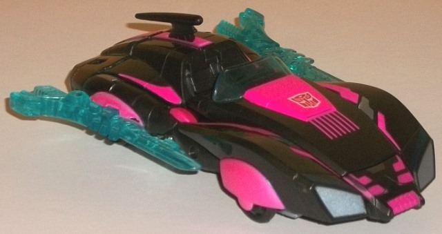
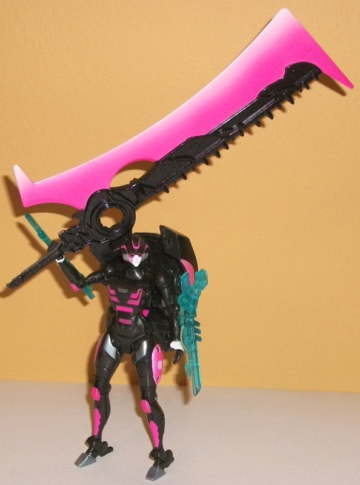
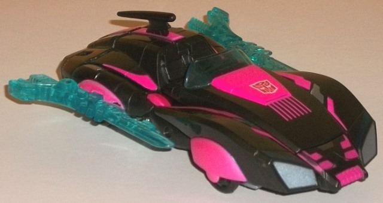
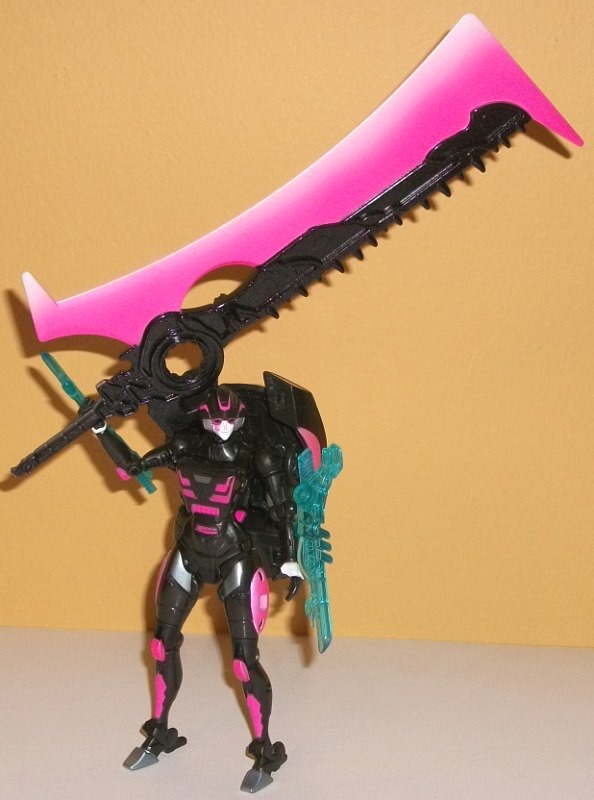
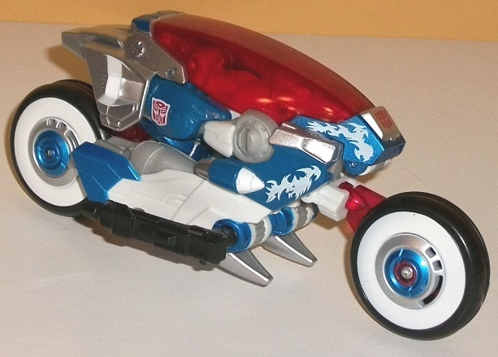
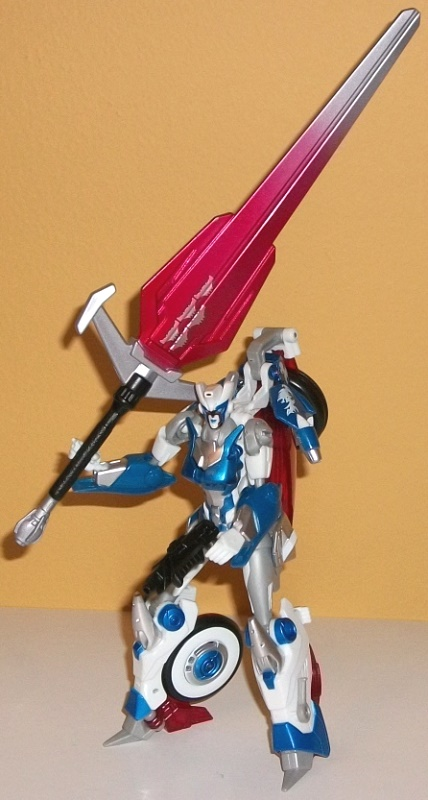
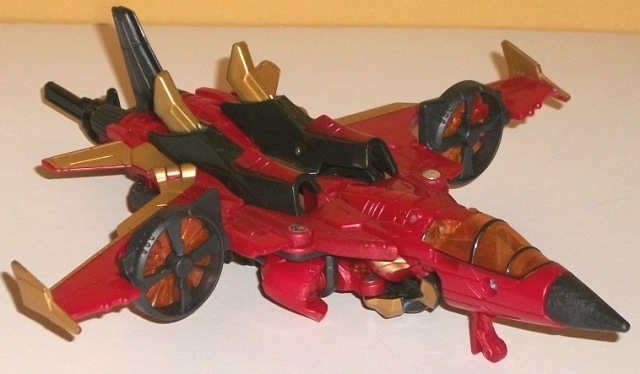
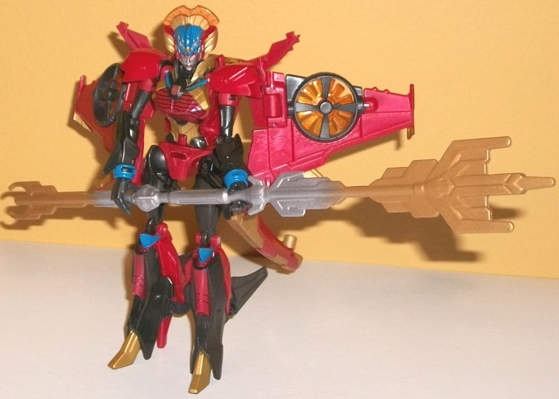

 
Allegiance : Autobot
Size : Deluxe
Difficulty of Transformation : Medium
Color Scheme : Semi-metallic black, hot pink, metallic hot pink, and some transparent aquamarine, white, silver
Individual Rating : 7.9
Price
: $75 (U.S.)
Overall Rating
: 7.9
(NOTE: Because this set is composed of repaints,
this is not a full-blown review. This mainly covers any changes made to
the set and the color scheme, and merely compares it to the original versions
of these molds. For a review on the original Generations Arcee, go
here
.
For a review on Prime deluxe Arcee-- the original version of the mold used
for Chromia-- go
here
. For a review on the
original Generations Windblade, go
here
.)
 Arcee
Arcee


Allegiance
: Autobot
Size
: Deluxe
Difficulty of Transformation
: Medium
Color Scheme
: Semi-metallic black,
hot pink, metallic hot pink, and some transparent aquamarine, white, silver
Individual Rating
: 7.9
Arcee has a more "stealthy"
scheme this time-- since, y'know, for Transformers, "stealth" means "mostly
black". Nevermind all those hot pink accents, she'll blend right into the
background. Sarcasm aside, this is a darn eye-catching color scheme. The
hot pink not only helps tie this back to obviously being Arcee despite
being a complete plastic color swap, it contrasts very excellently against
the black. And I'm not normally a fan of pink, but as an accent color on
this over-the-top "Girl Power" set it works pretty well. The sheer number
of pink paint apps is well-done as well, making her sleek car form look
even more sleek with the angular paint apps along the top and sides-- there's
also nice angular patterns on her chest and head, as well, and a rather
ridiculous pink Autobot tattoo below her right eye, which stands out well
against her white face (which hilariously still has the same good-natured
look on it as the original). There's also a bit of white on her hands.
The black plastic itself has some swirly glitter in it and is a semi-metallic
shade, and just looks quite nice and better than a "straight" black on
this toy. The transparent plastic is pretty much the same color as on the
original, being a transparent aquamarine-- which still works quite well
with the color scheme, the black in particular. There's also some silver
amongst all of Arcee's myriad paint apps-- on the headlights, part of the
front hood and the back of her car mode, and on part of her Princess Leia
curls as well, and helps add a bit more variety to her scheme.
It may not look like
it, but there HAVE been mold changes made to Arcee this time around-- her
hands have actually been widened so she can hold her absolutely ludicrously
huge weapon, a redecoed sword from
Beast Hunters
ULTIMATE Optimus Prime
. This is one hefty sword, and as such she has
a trouble holding onto it without falling over, unless you lean it back
against her shoulder. On the other hand, the size of the sword is kind
of hilarious and goes with the theme of the set-- not to mention the entire
blade portion of the sword is METALLLIC HOT PINK that fades to light pink
and then white at the blade. This is definitely one of the wackiest accessories
I've ever seen. However, because of this added huge sword, Arcee's two
guns has been taken away.
 Chromia
Chromia


Allegiance
: Autobot
Size
: Deluxe
Difficulty of Transformation
: Easy
Color Scheme
: White, dark flat blue,
transparent cherry red, metallic dark blue, silver, and some light milky
gray, metallic red, moderately light blue, and black
Individual Rating
: 8.2
Although an initial glance
may make one think that the only major change this version of Chromia has
compared to the original
Generations Chromia
is the white flame paint apps on the front, transparent cherry red plastic
on any transparent bits like the windshield, and some extra white, that
initial impression would be wrong. Chromia's still Chromia, to a larger
extent than Arcee and Windblade retain their original colors in this set--
but she's still got an almost complete color change in comparison to which
colors are where. (And that's not to minimize the white flame paint apps,
which contrast against the blue quite well even if they're small, or the
transparent cherry red, which looks absolutely fantastic as part of this
scheme, making the alt mode look even more like a TRON light cycle.) Most
of the light blue plastic from the original has been replaced with white,
which serves as a greater contrast against the now-darker shades of blue
on Chromia's lower arms, upper vehicle parts, and bits of the legs and
central wheel hubs. This greater contrast leads to greater visual interest,
as less of Chromia is now various shades of blue. (It should be noted that
there are still two shades of blue on Chromia, though-- the dark blue plastic
used on a few places like her lower arms is a bit duller than the dark
metallic blue paint used on most of her other blue parts.) She's also got
substantial amounts of silver-- particularly on the back end of her vehicle
mode and her kneecaps (and a bit on her wheel hubs and vehicle front, as
well). In fact, pretty much the only parts of her that aren't painted at
least partially are parts that CAN'T be painted because of the type of
plastic, like her upper legs and shoulders. Unfortunately, some of these
bits are a light milky gray in a poor attempt to "replicate" the silver
(why couldn't they have used metallic-flake plastic, especially for such
a premium piece such as this?), but it's not used much and is a minor quibble.
Another big plus is the additional paint on Chromia's head-- in addition
to the white base plastic used for her headcrest, she's got a dark metallic
blue line around her face, metallic red lines around her moderately light
blue eyes, and a white face with even her lips painted a light blue! The
whole scheme together makes her look like she's wearing some sort of superhero
mask, and it looks GREAT. Really, with all this excellent contrast, my
only issues with Chromia color-wise are the blah light milky gray bits.
No mold changes have
been made to Chromia when compared to her original Generations version,
but she does come with a ridiculously big silver-and-red sword with a black
handle-- it may not LOOK like she can hold it, but it's pretty hollow,
so she actually can wield it fairly easily. I love how on one side of the
sword it has symbols that look like Devastator's chest plate, and thus
logically represent the number of "combiners she's killed". A nice touch
to the over-the-top nature of these weapons. (Apparently the mold for this
sword originally came with the non-transforming 16" version of
Robots
in Disguise [2015]
"Titan Heroes" Optimus Prime.)
 Windblade
Windblade


Allegiance
: Autobot
Size
: Deluxe
Difficulty of Transformation
: Medium
Color Scheme
: Charcoal black, milky
red, gold, and some transparent glittery orange, transparent light blue,
metallic red, blue, moderately light blue, black, and silver
Individual Rating
: 7.5
Windblade's colors are
mostly the same as on her original Generations toy, but the amount of black
has been substantially reduced, particularly in vehicle mode. Her primary
color is a rather nice, milky shade of red that looks almost semi-metallic.
Her black is now more of a charcoal black-- I think a more "pure" black
would have worked better, but it still contrasts well with the other colors,
so I don't outright dislike it. Her transparent plastic-- for both her
turbines and her cockpit-- is now a really nice glittery orange, which
complements the red quite well. The major change here to Windblade is all
of the additional paint apps (which tends to come with being an exclusive
premium-priced figure, of course). There's gold lining all over her jet
mode, as well as on her sword hilt, her feet, and a bit on her waist and
chest. As if that wasn't enough, she's got just a touch of blue on her
wrists, neck, and head, which really helps to contrast against all her
red and just looks fantastic as an accent color. (Windblade's sword is
also transparent light blue as well-- I would have preferred a darker blue,
but it still looks pretty good.) The paint detailing on Windblade's chest
and head is absolutely astounding-- she's got little black "ridged" lines
across her chest, gold around its edges, the aforementioned blue color,
and then quite elaborate paint on her head-- a silver face with blue eyes
(and a DIFFERENT blue than the blue on the middle of her headcrest), with
some gold along the edges of her headcrest and some red below her eyes
and even on her lips, with a little bit of additional blue on the red marks
below her eyes. It looks marvelous, and quite frankly-- given how detailed
her headsculpt is-- is about the amount of paint she should have had on
it in the first place.
No mold changes have
been made to the core Windblade figure, but like the others in the set,
she comes with a ridiculously oversized weapon-- in her case, a gold-and-silver
redeco of the "Decepticon Hunter" weapon that originally came with the
non-transforming 16" version of
Robots in Disguise [2015]
"Titan
Heroes" Bumblebee. Given that it's a two-handed hollow weapon, she can
hold it a bit easier than a huge sword, though it can be a bit of a challenge
to get her to hold both this weapon and her normal sword at the same time
and still keep her balanced. The type of weapon does work for her character,
though.
The "Combiner Hunters" set, like the "Knights of Unicron" set from the year before, is the designers just plain having fun with redecoes (although this one certainly isn't QUITE as far "out-there" as the "Knights" set). All three toys have great color schemes that pay homage to their original colors while mixing things up a lot and giving them a TON of paint apps-- which, quite frankly, at an exclusive price, they SHOULD have. The absolutely ginormous weapons meet the over-the-top "Girl Power" theme of the set, though if you don't like the giant weapons it's easy enough to set them aside. The main downside of this set is the molds themselves, all of which are mediocre-to-okay. If you want some well-painted female TF warriors, though, and you're in the market for higher-end pieces, I'd recommend this set.
Reviews by Beastbot